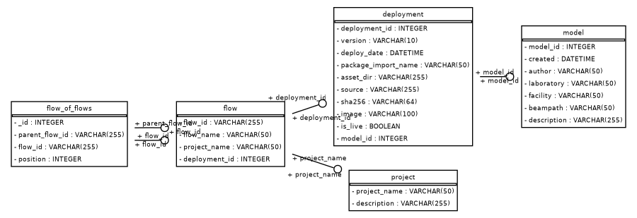
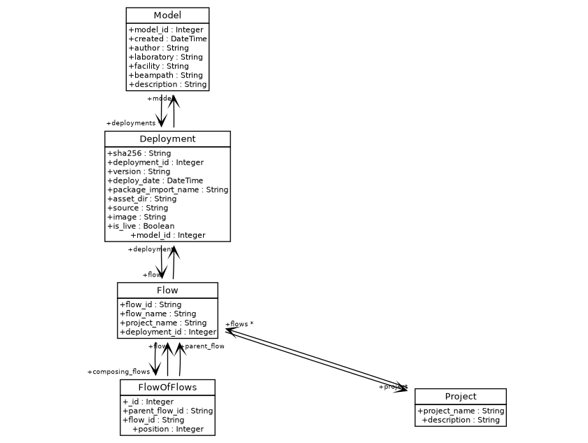

Model Service
The model service provides a registry for models and their metadata. Metadata is organized into the following tables:
-
Models The Models table tracks top-level information about a model. This includes:
-
author
- laboratory
- facility
- beampath
- description
- create date (generated on input)
-
model id (generated on input)
-
Deployments Deployments are versioned releases of a registered model. Deployments include information about source code and container image:
-
sha256: hash of the source
- deployment_id (generated on input)
- version
- package_import_name: python import string
- asset_dir: directory for designated imports (** this should be flushed out)
- source: uri of package source
- image: Name of the container image
-
is_live: Whether the deployment is live in production
-
Projects
Prefect organizes flows into projects. This table tracks projects as registered with Prefect and allows providing a description.
- Project name
-
Description
-
Flows
Flows track the relationship between deployments and Prefect flow metadata:
- Flow ID: ID of flow generated by Prefect
- Flow name
- Project name
-
Deployment ID: ID of corresponding deployment
-
Flow of flows
Workflows may be constructed by stitching together many subflows. This table tracks the stitching by a one-to-many mapping between the parent flow id in the Flows table, to entries the Flow of Flows table.
- Parent flow ID: ID of parent flow
- Flow ID: ID of subflow
- Position: Relative position in the flow of flows composition. For example, the second flow would have 2 in this field.
Schema is defined using the sqlalchemy API in lume_services/services/models/db/schema.py.:


Updating the model schema
On any changes to the schema, the database init script for the docker-compose must be updated.
From the repository root run,
python scripts/update_docker_compose_schema.py build-docker-compose-schema
This will automatically render the schema file in lume_services/docker/files/model-db-init.sql. Now, you can add this file updated file to the git repository.
Sqlalchemy notes
Sqlalchemy can be configured to use a number of different dialects. The database implementation in lume_services/services/models/db/db.py defaults to using a mysql connection, as indicated with the dialect_str="mysql+pymysql" attribute on the ModelDBConfig object. Additional dialects can be accomodated by assigning this dialect string.
At present, LUME-services does not take advantage of all the features of sqlalchemy, most notably the ability to do joined loads to link data between tables using relationships.
All queries could be adjusted to do things like joined loads for table relationships, etc.
API
LUME-services defines an API for model objects in lume_services.models.model.
A model's deployments can be accessed using the Model.deployments attribute, which will return a list of deployments associated with the model. This relationship is established in the sqlalchemy schema:
Environment resolution
LUME-services provides an interface to install packages from a given source. Below, we create a model and store a deployment.
from lume_services.models import Model
from lume_services import config
config.configure()
model = Model.create_model(
author = "Jackie Garrahan",
laboratory = "slac",
facility = "lcls",
beampath = "cu_hxr",
description = "test_model"
)
model_db_service = config.context.model_db_service()
scheduling_service = config.context.scheduling_service()
# create a project
project_name = model_db_service.store_project(
project_name="test", description="my_description"
)
scheduling_service.create_project("test")
source_path = "https://github.com/jacquelinegarrahan/my-model/releases/download/v0.0.44/my_model-0.0.44.tar.gz"
# populates local channel
model.store_deployment(source_path, project_name="test")